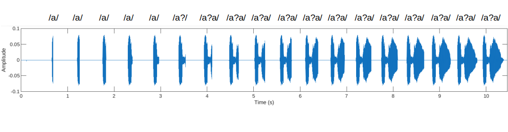
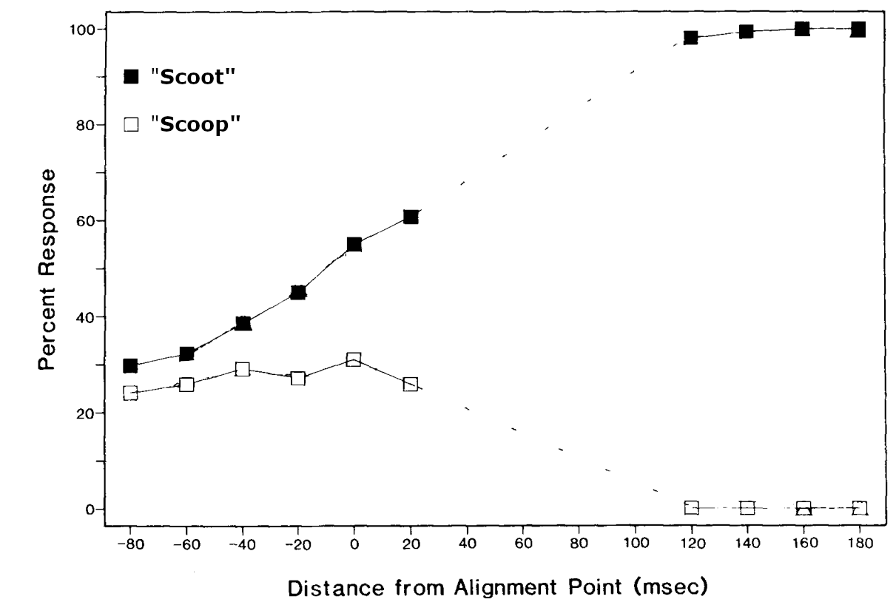
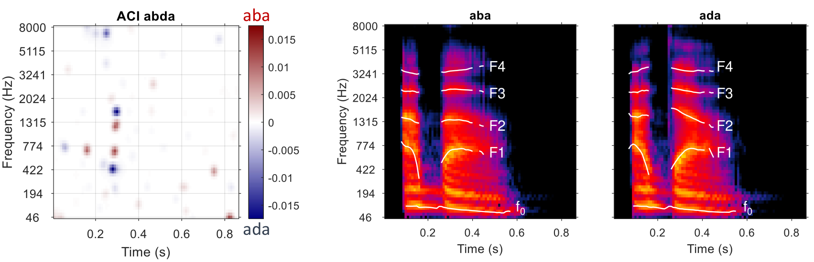
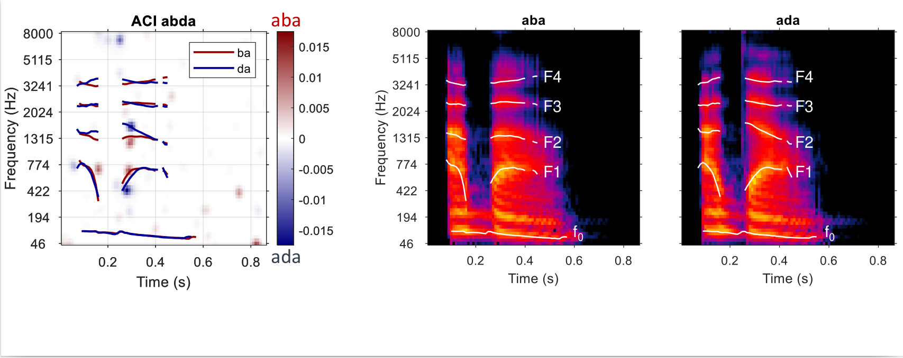

Warning
Page en cours de construction
Intégration des indices acoustiques#
On a vu (cours 3) que la perception d’attributs perceptifs simples repose surla combinaison plusieurs indices. la sonie d’un son complexe est une somme des sonies mesurées indépendamment par chaque filtre auditif la hauteur d’un son dépend de sa fondamentale, des harmoniques, et de la périodicité La localisation combine ITD, ILD, filtrage par le pavillon, direct/reflection ratio, loudness… En va-t-il de même pour la perception des phonèmes ?
Approche par gating#
[Warren & Marslen-Wilson, 1987]
Stimuli : paires de mots différant seulement par leur consonne finale (p.ex. « bagarre » et « bagage »), avec troncation de la fin du son Méthode des stimuli constants sur la durée du son tronqué + paradigme yes/no + tâche de catégorisation
{kind=link}

Fig. 114 Continuum de parole tronquée. Le dernier stimulus correspond au son complet “a?a” (avec “?” une consonne à identifier). Les autres stimuli sont composés en retirant un segment de plus en plus long de la fin du son, par pas de 25 ms.#
{kind=link}

Fig. 115 .#
Images de Classification Auditives#
L’Image de Classification, une nouvelle méthode psychophysique développée à partir des années 2000 [Murray, 2011] … et adaptée récemment à la modalité auditive [Varnet et al., 2013] Un moyen de visualiser directement les indices acoustiques auxquels les participant·e·s prêtent attention pour catégoriser les phonèmes, au moyen de stimuli de parole naturelle présentés dans le bruit, au seuil de catégorisation à 70%.
Application à une tâche de catégorisation /aba/-/ada/ (paradigme yes/no) D’après ce que nous avons vu dans la partie précédente, la transition de F2 joue un rôle important pour cette tâche.
{kind=link}

Fig. 116 .#
L’Image de Classification Auditive révèle les régions temps-fréquence utilisées pour réaliser la tâche (zones rouges et bleues)… c’est à dire la position des indices acoustiques.
{kind=link}

Fig. 117 .#
Confirme que l’attaque du F2 est un indice pour catégoriser /b/-/d/. Trois indices supplémentaires ! (notamment un indice de coarticulation sur la voyelle initiale)
Multiplicité des indices acoustiques
Le problème du manque d’invariance (partiellement) résolu : pour identifier les phonèmes de façon univoque, le système auditif se base sur de multiples indices acoustiques. Du fait de la coarticulation, ces indices dépassent les frontières du phonème lui-même.
(en fait, sans ce phénomène de tuilage de l’information il serait impossible d’obtenir un débit de parole naturel de 15 phonème/s)
Perception multimodale#
[McGurk & MacDonald, 1976]
Effet McGurk: influence de la vision sur l’audition lors de la perception de parole
Stimulus : son /ba/ + vidéo /ga/ (et autres combinaisons) Méthode : mesure de performance Tâche : intelligibilité (ou catégorisation ba/da/ga) Pas de dimension ni de paradigme
Stimulus : son /ba/ + vidéo /ga/ (et autres combinaisons) Méthode : mesure de performance Tâche : intelligibilité (ou catégorisation ba/da/ga) Pas de dimension ni de paradigme